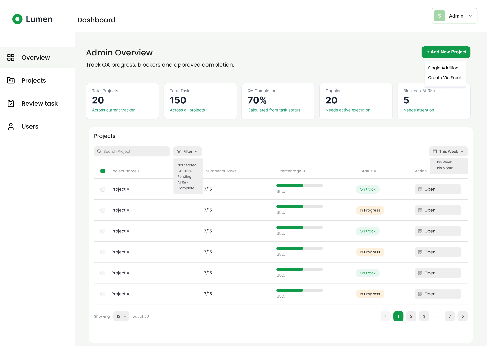
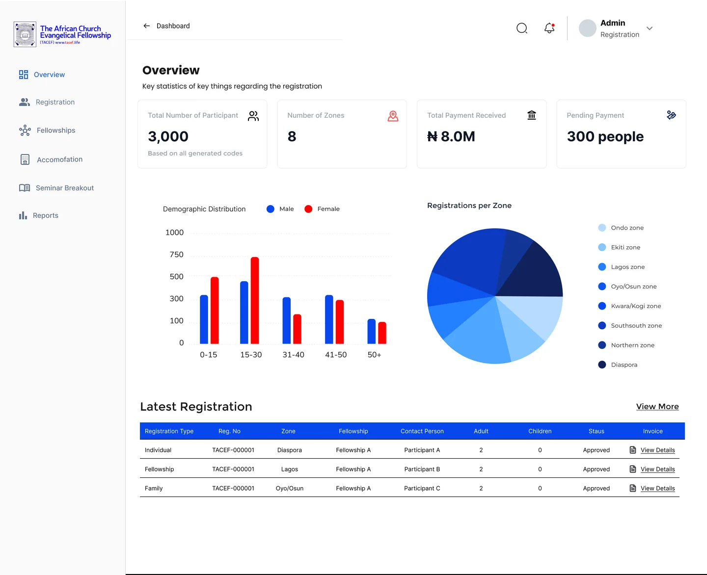
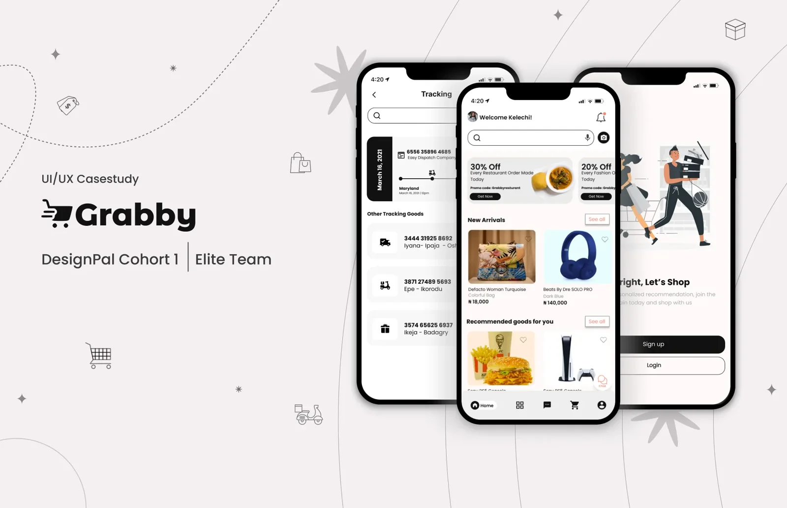
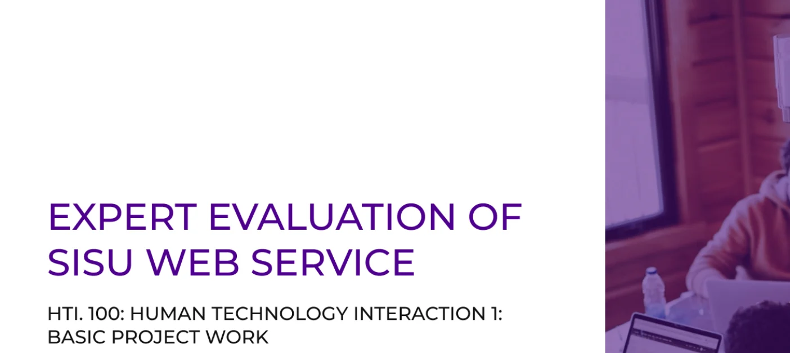
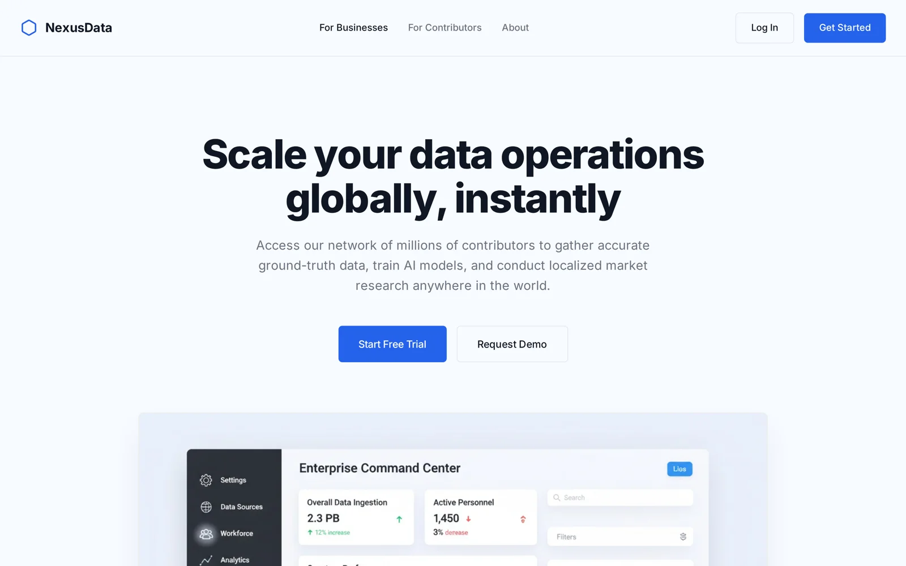

Case studies

FIG. 01 — SOLE DESIGNER DSN QA Review Platform Data Science Nigeria · Multi-role workflow design (4 user roles) View case study →
FIG. 02 — LIVE PRODUCT TACEF Convention Ecosystem Enterprise SaaS dashboard · Security-first UX & resource planning View case study → FIG. 03 — DESIGN SPRINT
Kryptal
Web3 exchange platform · Accessible, secure crypto trading
View case study →
FIG. 03 — DESIGN SPRINT
Kryptal
Web3 exchange platform · Accessible, secure crypto trading
View case study →
 FIG. 04 — TEAM LEAD
KloFood
Responsive web service · Sustainability & food-waste reduction
View case study →
FIG. 04 — TEAM LEAD
KloFood
Responsive web service · Sustainability & food-waste reduction
View case study →

FIG. 05 — TEAM LEAD Grabby E-commerce mobile app · Interactive, customisable shopping View case study →
FIG. 06 — HEURISTIC EVALUATION Expert Evaluation of SISU Educational platform · Structured usability audit View case study →Self-initiated, not client work

FIG. 07 — RESEARCH PROJECT Nordata Two-sided marketplace concept · Data services for Finland's AI economy View case study → FIG. 08 — SELF-INITIATED CONCEPT Android Concept Permissions, denied & offline states, notification priority View concept → FIG. 09 — INTERACTIVE LAB Friction Lab Spot the friction, break the device, switch the role (concept screens) Try it →Five steps, and what I do differently at each.
- UnderstandRead the spec or PRD, then check it for gaps before any screen is drawn. At DSN an AI-assisted check found user-need gaps in 9 of 10 recent projects.See it in DSN →
- DefineWrite down each role and what it may do. At TACEF that meant every admin sees only what they are allowed to manage.See it in TACEF →
- DesignFlows and Figma prototypes with error and status states drawn in from the start, not added at the end.See it in the Friction Lab →
- TestPut it in front of real users. KloFood testing showed unclear wording and weak reasons to come back, so I now test earlier.See it in KloFood →
- Hand offSpecs and components developers can build from. When engineers flagged flows missing from the PRD, I worked through them together.See it in DSN →
"I build for the user, design for the developer, and solve for the business."
I'm a UX and product designer. For the past four-plus years I've worked on enterprise SaaS dashboards, admin tooling and AI-product interfaces, where the users are professionals and a confusing screen costs them time. Earlier work spans e-commerce, fintech and Web3, and civic-sector platforms, usually as the person leading research, structuring the information and handing engineering something they can build without guessing.
Currently designing at Data Science Nigeria (remote), based in Tampere, Finland, and open for immediate opportunities. MSc in Information Technology, Tampere University.
Practice
- User Research
- Heuristic Evaluation
- Information Architecture
- Wireframing & Prototyping
- Design Systems
- WCAG 2.1 Accessibility
- User Flows & Journey Mapping
- Affinity Mapping
Tools
- Figma
- Miro
- Adobe Photoshop
- Notion
- diagrams.net
- HTML / CSS
AI-Augmented Workflow
- Figma AI
- ChatGPT / Claude
- Banani
- Replit
Visual work
Alongside UX work I make photography, graphic design and short film. The full page explains what I made and why.

Experience
Present
- Introduced AI-assisted PRD validation, which found user-need gaps in 9 of 10 recently reviewed projects before design started.
- Sole designer on a QA review platform: ran the design work with stakeholders in a design sprint, then designed task creation and changes across four user roles, an admin layer, Excel upload and an automatic status trigger. Reviewed built screens against the designs with developers. See the screens →
- Run usability research and heuristic and WCAG 2.1 audits on enterprise dashboards, and turn the findings into developer-ready specs.
2023
Led six stakeholder interviews in a client-facing innovation sprint and redesigned a recruitment workflow, targeting a 20% reduction in time-to-hire.
2022
Ran heuristic evaluations against established usability principles. The written critiques became engineering-ready specs, contributing to a 10% drop in bounce rate.
2022
Owned end-to-end research and design of Grabby, an e-commerce mobile app, in Figma: research with 15 users from discovery to a high-fidelity prototype, applying iOS and Android conventions. Led a team of eight designers.
Present
Eight recurring clients across startups, NGOs and small businesses, covering discovery, research, UX and UI design and developer handoff. Five of them came back for more work.
Recommendations
"Tosin is part of the only reason we even have a case study, honestly. He was part of the whole process from brainstorming to delivery — he approaches any obstacle with an open mind and is an awesome team player."
"Oluwatosin's ability to motivate everyone on the project, and his desire to keep going while others gave up, always left me in admiration. He also showed he's a quick learner by picking up Figma from a few video tutorials."
"Tosin is a great asset. He was readily available to take up tasks and ensure the project was completely and properly executed. His time management is top-notch."
"Tosin brought and utilised his UI design and user research skills on a sustainability project reducing food waste among Gen Z. His team spirit and ability to see the bigger picture and apply it to design really paid off."
"One of Oluwatosin's standout qualities is his ability to stay focused on a task until success is achieved. No matter how complex the challenge, he remains tenacious and determined to see it through."
Let's build something people can trust.
Open to product and UX design roles, and consulting work. Enterprise SaaS, admin tooling and AI products especially welcome. Available immediately. Based in Tampere, reachable anywhere.
- Emailoyerooluwatosin.ayo@gmail.com
- Phone+358 45 172 2370
- WhatsAppwa.me/358451722370
- LinkedInin/oluwatosinoyero
- Behanceoyerooluwatosin1